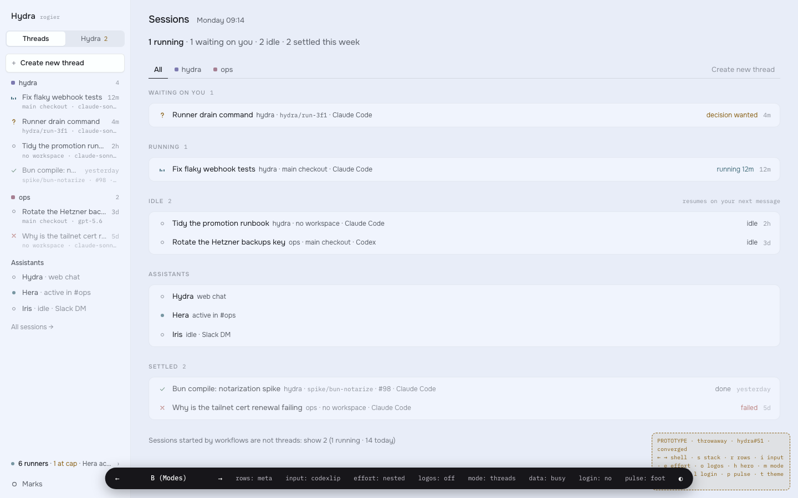
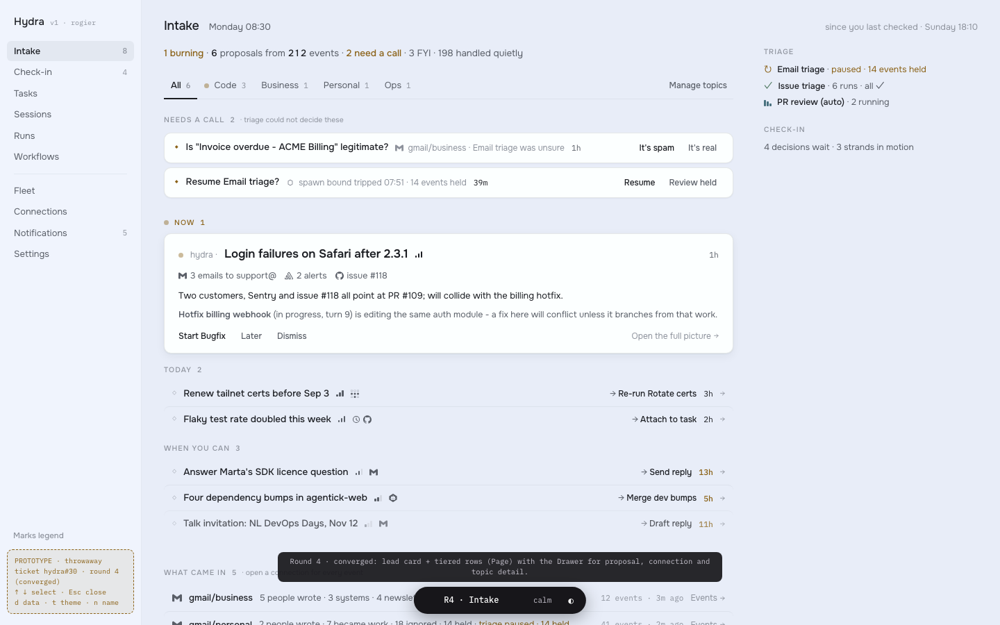
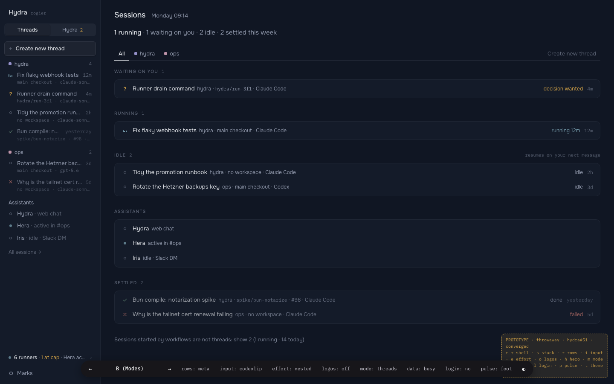
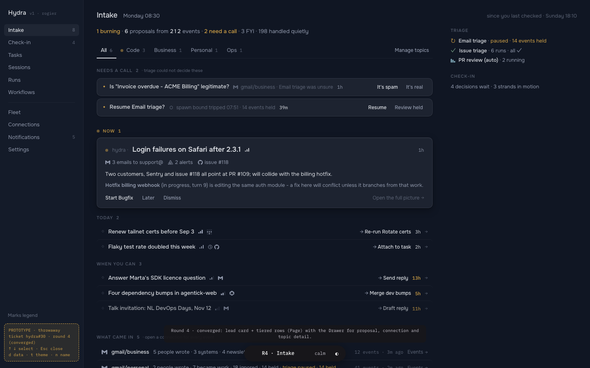

A swarm does not scale in lists. It scales behind a voice you trust. In Concierge, Ada, your primary Assistant, is the front door: home is her briefing, a few calm sentences with each decision set inside as a card. Every card carries its real bound actions and their describe lines, so answering is one key and never a guess. Intake, the Office and every Thread stay one step away. Most days you will not need them.
Ada · working · heartbeat 09:00
Three things wait on you. The push unblocks the checkout fix.
02
Why this one
The other nine make the swarm easier to look at. Concierge makes looking optional.
A good chief of staff does not hand you forty folders. She tells you the three things that need you and has the answers ready. Ada does that at every heartbeat and whenever you ask: on the desktop, in a browser tab, on your lock screen. Everything else is in her receipt, one click away.
It is the only direction where attention is spent on deciding, not scanning. The screens you already know still exist, and they got better too, but they are no longer where the day starts.
You gainOne place to start. Decisions answered in one key, from any surface. Scale that shows as numerals and bundles, never a longer list.
You tradeThe see-everything feeling. Working on many rows at once is one step further away, in Intake and the Office. And it leans on triage: a weak brief is worse than a list.
It neverDecides for you. Every card is a real Proposal or Request with its bound actions, one tap from its full page. Ada only chooses what you see first.
03
Why it is 1000x better than today
Today's design has good bones: the domain, the thread surface, the calm. What it spends is your attention. Each pair below is measured in the one thing that matters: how fast you get from opening Hercule to a decision made.
3.1
Home answers you, instead of listing things
Today · Sessions is home

The one thing that needs you, “Runner drain command · decision wanted”, is one row among twelve, set in the same weight as the rest. To answer it you find it, open the thread, read, then find the card.
Concierge · Ada is home
One sentence names the urgent thing. Its card counts the evidence (412 errors, 188 users, −18% EU conversion) and carries the answers. ↵ starts the fix.
Open to decidedtodayfind · open · read · answerConciergeread one sentence, press ↵
3.2
Intake you read by color and number, not by sentence
Today · Intake

Color lives at dot scale, so every row has to be read. Lane labels are 10.5px capitals. The answers are ghost words (Start Bugfix · Later · Dismiss) that do not say what they will do.
Concierge · Intake
One numeral per lane. Every row carries its project room's color, so webshop, payments-api and ops separate before you read a word. Each answer is a full-width row that says what it will do, with its key.
Telling items aparttoday6px dots · read every rowConciergeroom color + one numeral per lane
3.3
A dark theme that is not navy, and a composer that gets out of the way
Today · Midnight dark

Neutrals at hue 265 with chroma 0.029 read as navy. Faint text sits at 3.0:1, below the line where metadata stays readable late at night. One dark theme, no choice.
Concierge · Espresso, scrolled back
Warm, near-neutral grounds at hue 55 and chroma 0.012. Ink at 15.4:1, faint at 4.5:1. Three dark themes, each crisp. While you read back, the composer turns to glass and shrinks, and the waiting Request stays docked on it.
Dark groundneutral265 · 0.02955 · 0.012faint text3.0:14.5:1ink13.4:115.4:1dark themes13
3.4
Decisions wherever you are, in one tap
Today · a web tab

A decision waits until you are at a desk with the tab open. When you get there, “It's spam · It's real” and “Resume · Review held” are quiet text, easy to miss and slow to trust.
Concierge · the lock screen and one tap
The same bound actions ride on the push and in the Live Activity. Tap the notification and the decision opens with answer rows sized for a thumb; a firm haptic confirms the answer started.
Where you can answertodaya web tabConciergedesktop · menu bar · web · phone · lock screen
04
The system
One voice speaks in a serif; everything she brings you is set in the sans, as a note with its answers. Color says who; shape says what state.
Color is voice
Real color, used boldly, and always for one reason: to say who. Nothing is colored for decoration.
1Large color says who.Ada speaks in persimmon. Each other Assistant has its own hue. A Session wears the color of the project room it works in.
2State is shape, at mark scale.12px marks with a word beside them. “Needs you” is Ada's color, because she is the one who brings every decision to you.
3Sources are provenance.GitHub, Sentry, Gmail and the rest are where things came from, not voices. Their marks stay in ink.
4Hercule speaks in ink.Receipts, counts and the core's describe lines never take a hue. The system itself never shouts.
Every hue in use, unrolled from 0 to 360. No two meanings share a hue, and Ada's alternative color may only take a gap no one else uses.
Five themes, one voice
Two light, three dark. The grounds change; the meanings never do. Click a theme to switch this whole book and every screen in it. Linen and Espresso are the flagships and the defaults for light and dark.
Ada's colorPersimmon · defaultCobaltGraphiteHer color is also “needs you”, so it moves as one: orb, answers, marks.
Type: a voice and a ledger
Assistants speak in Newsreader, upright, never italic. Everything else, including the agents' own prose, is Inter. Commands, paths and diffs are JetBrains Mono. Hierarchy comes from numerals and weight; page titles stop at 18px on the desktop and 20px on the phone.
Voice · Newsreader 420, upright17 / 1.5 in the app
Morning Rogier. One urgent thing: EU card payments that need 3-D Secure have failed since yesterday's deploy.
−18%EU checkout conversion412errors in Sentry2,512handled quietly
Fine print11 fineDescribe line12 metaRows and answers13 uiAgent prose14 bodyCard title15 titleAda speaking17 voicePage title18 page41226 num−18%38 num-lg
Shape, depth and glass
Soft corners, like well-set notes. One level of containment: a note. Inside a note there are hairlines and spacing, never another box. Glass is kept for what floats over moving content: the composer, the sidebar, the phone's tab bar and sheets.
4 xs7 sm10 md14 lg · notes20 xl · sheetspill
ground--bg
surfacethe column
notea card, the one box
liftmenus, sheets, windows
glassfloats over moving content
Found it. Since Stripe SDK v14, confirmPayment returns status: 'requires_action' for cards that need 3-D Secure. handlePaymentResult only handles succeeded and treats everything else as a failure.
if (result.status === "requires_action") {
returnopenThreeDSModal(result.clientSecret);
}
I wrote a failing test first, then the fix. Tests pass. Ready to push the branch and open a pull request.
git push is waiting on you
The glass composer: while you read back, it shrinks to this pill and lets the transcript show through. The waiting Request stays on it.
Motion: calm, and always explaining something
Ada's words arrive in phrases, not characters. A decision card settles into her message. The orb breathes when she is idle and swirls when she works. Nothing moves that is not telling you about a change.
workingswirls, 3.8sidlebreathes, 7slisteningbreathes, 2.2sasleepa still crescentcan't be reacheda hollow ring
--dur-quick140mshover, press--dur-glass280msthe composer shrinks or returns--dur-settle460msa card settles into a message--dur-phrase520msone phrase of Ada's voice arrives--dur-breathe5.2sthe orb, idle or listening--ease-settle0.2 0.8 0.2 1everything that lands
Reduced motion stops the orb and lets phrases arrive whole; state still reads from shape. Reduced transparency turns every glass surface solid.
Ada11:40 · check-in
The fix is ready. It only needs your OK to push.
RequestwebshopFix 3-D Secure checkout
Run git push -u origin fix/3ds-eu-cards?
Looped here: three phrases arrive, then the card settles in.
Marks and icons
One bespoke family on a 12px grid for state and kind, a 16px set for controls, and source marks in ink. One mark per slot: a row's first cell holds its state mark, in its project's color when it is a Session.
waiting on youworkingqueuedpauseddonefailedcancelledskippedheldThreadRunTaskWorkflowOfferFYIattachedReminderNotice
One conversation column everywhere, with a glass composer at its foot. What changes per platform is the frame around it: a translucent sidebar on the desktop, a top bar on the web, a thumb-reach tab bar on the phone.
Desktop app. Keyboard first: ⌘J asks Ada, ⌥Space answers from any app, every answer has its key.
Ada · Intake · Office · Settings · Ask Ada
columnthe Conversation or a Thread
glass composer
facts railor the open item
Web. No sidebar: a top bar and deep links. At 1280 the second column appears instead of the page shrinking.
one columnbig answer rows
IntakeOfficeSettings
Phone. Hold the middle to talk.
4pxbase unit; every gap is a multiple
34/ 28row height, comfortable and compact
780pxthe widest a conversation column gets
1boxlevels of containment: the note
The signature: her voice, with the decision set inside it
This is the element you would recognize from across the room: a warm orb, a sentence in a serif, and a card that is the real Proposal with its bound actions.
Ada09:00 · heartbeat · triage found 212 events
Morning Rogier. One urgent thing: EU card payments that need 3-D Secure have failed since yesterday's deploy.
1The orb says who and how. Ada's persimmon, breathing while idle, swirling while she works.
2The serif is a person speaking. Short: two sentences, then the card.
3The card is the record. A Proposal with its evidence counted and one numeral, not a summary of one.
4The answers are bound actions. Label, the core's describe line, the producer's fine print, and a key.
5The receipt is honest. Everything she did not bring you, counted, one click from the full picture.
Logo and app icon
The orb resting on the front desk. It is Ada at her post, and the one thing on the desk is the thing that needs you. The same orb is the menu bar extra and the favicon, where it carries the count of what waits.
1286432dark
Hercule
3Tue 29 Sep 09:41
The menu bar extra: Ada's orb with the count of what waits on you.
Ada · Hercule(3) Intake · 8 new · Hercule(11) Ada · Hercule
calm3 wait on you11 wait, at 10x
05
Screens
All 22, live. Every one follows the theme you pick at the top; open any of them on its own with the link under it.
Desktop app
macOS first: a translucent sidebar, keys on every answer, the menu bar and ⌥Space for answering without switching apps.
Web
Zero install and deep links. No sidebar: a top bar, and at 1280 a second column instead of a smaller first one. The tab title and favicon count what waits.
Mobile
Where many decisions will be made. Thumb-reach tabs, big answer rows and swipes, sheets instead of popovers, voice first, and haptics noted where they fire.
06
The office
If Ada is the front desk, the Office is the floor behind her: every live session at a desk, in its project's room. You visit it to check on her, not to work from it.
Ada at the front desk. Her orb, Milo's and Juno's sit at reception. The paths she draws to the desks that wait on you are dotted, in her color.
Rooms are projects. The room keys from every list become the carpets: marigold webshop, lagoon payments-api, moss ops.
The same marks, at desk scale. Working, waiting, paused and idle read by the same shapes as a sidebar row.
The same cards. A desk that waits on you raises the Request card from the thread, with the same bound actions and keys.
Machines are wings. Desks per runner, with the cap shown as empty chairs. Idle sessions without a desk are counted, not drawn.
List | Office. One toggle away from the same sessions as rows. The Office replaces the All sessions page, not the lists.
07
At 10x
140 live sessions, 31,000 events a day, 60 proposals a morning. Ada's brief stays three sentences. The growth goes into numerals, bundles and the receipt, never into a longer list.
3sentencesAda's brief at 1x and at 10x. “Three things are burning. Nine need your call; I bundled them so one answer covers many.”
1answerfor a bundle. Merge all 14 fires one bound action per item, each still recorded on its own.
2,512of 2,640events handled quietly this morning, counted in the receipt, never listed.
80of 86desks in use on nine machines. The Office groups the eleven waiting desks into “seven of the eleven are one npm question”.
08
Adopting it
Every token today has a home here, mostly under the same name. The swatches show today's light and dark beside Linen and Espresso.
Today
Today, light · dark
Concierge
Linen · Espresso
What changes
--bg
265 · 0.029
--bg
Warm paper and roasted brown instead of blue-violet. Chroma drops from 0.029 to 0.012 in dark.
--surface
--surface
Same role: the column and the sidebar under glass.
--raised
--raised
Same role: notes and cards. New --sunk below the ground for code and receipts.
--ink
13.4 : 1 dark
--ink
15.4 : 1 in Espresso.
--muted
5.6 · 6.3 : 1
--muted
6.4 · 8.1 : 1.
--faint
2.7 · 3.0 : 1
--faint
3.7 · 4.5 : 1. Metadata stays readable.
--line
--line
Warm ink at 13%, not blue.
--line-soft
--line-soft
The hairline inside a note.
--attn
amber
--attn = --accent-ink
“Needs you” becomes Ada's persimmon. New --accent fills her orb and the primary answer.
--fail
clay
--fail
Crimson, clearly apart from persimmon. Plus --fail-soft for a failed notice.
--live
petrol
--live
Jade: the working equalizer, never a pulsing dot.
--ok
sage
--ok
Emerald: done, diff additions, passing tests.
--project-hercule --project-ops
dots only
--project-<slug>
A fixed palette of room colors, assigned per project in order, used at tile and mark scale.
--sans · --mono
Onest · IBM Plex Mono
--font-ui · --font-mono
Inter · JetBrains Mono
Plus --font-voice, Newsreader upright, for Assistants only.
none
--voice-* · --glass*
One hue per Assistant; glass and blur for the composer, sidebar, tab bar and sheets.
1
Tokens and five themes
Replace the Midnight block with the five themes and their light / dark aliases, so the existing Light, Dark, System choice keeps working on day one. The selector grows to five tiles plus Ada's color.
Swap Onest and IBM Plex Mono for Inter and JetBrains Mono, and add Newsreader for the voice. All OFL, self-hosted, so the strict CSP stays as it is.
packages/ui/src/fonts/packages/ui/src/styles.css
3
Marks, logo and the orb
Recolor the marks by the doctrine (needs you takes the accent, paused goes to ink), draw the orb-on-desk logo, and add an Orb presence component for every Assistant, with its five states.
A single DecisionCard with the ledger of answers (label, describe line, fine print, key), used by the permission card, Intake and an Assistant's message. The data it reads already exists: bound actions and their describe lines.
The home route shows the web-chat Assistant's Conversation. The sidebar gets Ada, Intake and Office on top, with Waiting / Working / Paused / Idle below. The composer turns to glass and compacts while the transcript is scrolled back.
Nothing in the domain changes. Proposals, Requests, bound actions and their describe lines are used exactly as specified. What changes is where things live and how they look.
1
Home is Ada's Conversation
The default route / becomes the web-chat Assistant's Conversation instead of Sessions. On a fresh install, before any triage, Ada's first message offers to start a Thread on this machine, so the first minute still ends in a Thread on this machine, as the spec intends.
14 §V1 screen inventory, “Home is Sessions” and the URL space; 14 §Onboarding and first run
2
Bound actions render inside an Assistant's message
When Ada mentions a Proposal or Request, the web chat shows it as the decision card with its bound actions, the same record as in Intake. Answered in one place, it shows as answered everywhere.
10 §7.3 Router and sinks, web chat as a sink; 10 §7.4 Bound actions; 10 §7.7 Answered elsewhere; 12 §9 Web chat
3
The morning brief is Ada's heartbeat, and it is the front page
The spec already allows narrative brief prose as an Assistant posting to a channel. This design makes that post the home screen, while Intake keeps its lanes.
Intake may group like items (“14 dependency bumps”) under one answer that fires each item's own bound action, so every item is still recorded and undone on its own.
10 §7.4 Bound actions; 10 §8 Intake and check-in
5
Five themes, an accent, and filled primary answers
Replaces “one light, one dark” with five themes and a limited choice of Ada's color. “Needs you” becomes the accent instead of amber. The primary answer is a filled row, not a text-only ghost button.
14 §Design language, register and semantic hues; 14 §Iconography, paused in attention hue; 14 §App shell, the theme row
6
A new shell: Ada, Intake, Office
The two-face sidebar (Threads | Hercule) becomes one list: Ada, Intake, Office, then sessions by state. The All sessions page becomes the Office with its List | Office toggle. Check-in folds into Ada's check-ins and the Office.
A menu bar extra, a global-hotkey quick panel, native notifications with bound-action buttons, and any Thread in its own window.
14 §Packages and desktop-shell readiness; 14 §Post-v1, desktop app; 10 §7.3, a desktop sink
8
New paths, and a web layout without a sidebar
/proposals/<id> as the landing page for a link from Slack or email, /office, and /settings/providers. The web app uses a top bar instead of the sidebar.
14 §V1 screen inventory, the pinned URL space
9
A phone, with push
A mobile push sink whose notifications carry bound actions, a Live Activity for a Thread that waits on you, an Office tab and hold-to-talk to Ada.
 Ada · Hercule
Ada · Hercule
 (3) Intake · 8 new · Hercule
(3) Intake · 8 new · Hercule
 (11) Ada · Hercule
(11) Ada · Hercule